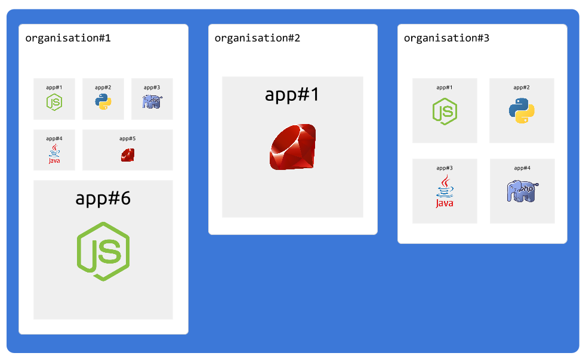

Intro
Organisations is an important concept in cmdcenter.
It helps you separate ownership and control access to infrastructures you manage.
What is an organisation ?
Organisation concept maps one to one with the person or team responsible of managing deployments/backups and hosting inside an organisation.
Usualy we call this people system engineers/sysadmins/build engineers, ... and in some organisations developpers are also directly responsible of operations (devops).
CmdCenter is aimed and designed exactly for this people.
Independance
An organisation is 100% independent.
It has its own server instances, members, apps and private network

Organisation folder structure
All data and configurations are stored inside dedicated organisation folder under $CMDCENTER_DATAHOME directory
.
├── apps // applications
│ ├── myapp1_staging // example app #1
│ │ ├── files
│ │ │ └── remote // all this files will be copied to remote appserver hosts
│ │ │ ├── docker // Can contain files to include inside Docker. src folder contains sources from git repository
│ │ │ │ ├── Dockerfile // Dockerfile to create docker image
│ │ │ └── host
│ │ │ ├── git_deploy_key // deploy key (private)
│ │ │ └── git_deploy_key.pub // deploy key (public), include this in your private git repository settings
│ │ ├── mongo.json // this app uses a mongodb server inside this organisation
│ │ ├── mysql.json // this app uses a mysql server inside this organisation
│ │ └── project.json // application basic config
│ └── testapp // example app #2
│ ├── files
│ │ └── remote
│ │ ├── docker
│ │ │ └── Dockerfile
│ │ └── host
│ │ ├── git_deploy_key
│ │ └── git_deploy_key.pub
│ ├── mongo.json
│ ├── mysql.json
│ └── project.json
├── backups // global backup folder
│ └── mongo // mongodb backups
│ ├── 20151115_043933
│ │ └── admin
│ │ ├── system.indexes.bson
│ │ ├── system.users.bson
│ │ ├── system.users.metadata.json
│ │ ├── system.version.bson
│ │ └── system.version.metadata.json
│ └── 20151115_043933.tar.gz
├── servers // servers folder
│ ├── appserver // appserver config
│ │ ├── access.ini
│ │ ├── files
│ │ │ └── remote
│ │ │ └── nginx
│ │ └── instances.json
│ ├── mongo3server // mongo3server config
│ │ ├── access.ini
│ │ └── instances.json
│ └── mysql5server // mysql5server config
│ ├── access.ini
│ └── instances.json
└── sshkeys // ssh keys
├── main_ssh_id
└── main_ssh_id.pub
Private network
All server instances inside an organisation are designed to run inside exactly one private network.